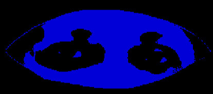

Surveillance: A Note
Susan Visvanathan

Susan Viswanathan is an Indian sociologist, social anthropologist and a fiction writer, she was a professor of Sociology and former chairperson at Centre for the Study of Social Systems at the Jawaharlal Nehru University
The art of watchfully keeping track of the lives of others is a craft as old as time and family history. Husbands overlooked their wives’ activities, and searched them for evidence of adultery. Wives were adept at finding out where their husbands were if they came home late and how much money had been spent socializing or on friends, or on the philanthropic ambitions of others. Siblings told on each other, reporting each other’s illicit activities in loud carrying voices. Of course, friends had complex surveillance forms tracking one another through gossip and friendly conversations with mutual friends. It just was not possible to keep a secret. By the time computers and mobile phones came within reach of the masses, the evidence of private lives lived in public was just so much more evident. Courts decreed that private lives were the jurisdiction of those who were exercising free will, so women had ‘agency,’ and public prosecution of voyeurs with harmful intent was possible. Against the family, and against lovers’ compelling desire to be with another, was the ruling of the State, which had become in Carol Pateman’s terms the ‘mother-father’ (ma-baap) of the authoritarian paraphernalia of the State.
The Emergency in the 1970s dulled the adolescent ability to rebel. People stayed home, came back at sundown, and in the morning went to college or work, keeping their opinions to themselves and speaking in whispers. Anyone threatening to speak out was cautioned. Forty years later, a culture of silence came up in a more vehement way. According to this view, Human Rights was a Western concept.
The Freedom Movement had ostensibly suppressed the rights of Hindu Right Wing activists. Nehruvians were elitist English speaking people who had no idea of the workings of the 3000 year old civilization of India. Slowly, people acclimatized to this idea too, and went about their work and duties without looking right or left, up or down, or straight ahead. They averted their gaze, afraid that they would accost the staring enraged eyes of the vigilante, who had been summoned from urban and rural areas as henchmen to those who felt that Muslims, Christians and Gays should be thrown into the sea, or put into camps. Life had changed, and surveillance was legitimized as ‘enemies of the state’ were now a category applying to anyone who did not conform to the ruling ideology. People no longer remembered a time when religious places were open to all.
The magnates who oversaw the energy industry also ran the communication businesses, and collaboration between them and the self-acclaimed Machiavellian princes of the state allowed for roads to be built, trees to be cut or planted, and laws to be changed. Efficiency became the pivot around which everyone swivelled. In the Emergency too, in the early 1970s, trains ran on time, and people were happy. Now, the henchmen of the ruling classes had provided the State with every electronic tool that enabled access to their software and electronic merchandise, and the masses had given up everything for quick access to bank accounts and personal information. As long as there was electricity, there was hope. However, humans do not live by desire and consumption alone. There is a long evolutionary history of survival which is about interaction, dependence and mutual care. From birth itself, there is a seeking to understand, a hope for attention. These traits have survived.
One of the most interesting films dealing with this topic is “The Lives of Others” (2006) which won a Bafta award. Now, it is no longer available in our territories, because it attracts artists, writers and actors who want freedom of speech, who ask for normal life as known to them from novels and documentaries and histories of the last century. Yet, young people hope to live, and they look forward. The mode of survival is to ask questions, to be curious and to live under the gaze of the surveillance officer, the AI magic eye, as if daily routines can go on without self-consciousness.
Ramana Maharshi loved the camera, and had no objection to photographers and documentary film makers. He saw film as an archetype of the dream, it is real, but it is a dream. By accepting surveillance he used it to represent the exemplary life. For that to happen one had to lose one’s ego, one’s attachment. That’s hard for most of us ordinary people to do.
The surveillance of the State, treats us as mere objects who can be viewed clinically through a lens or a screen. Everyone is suspect of tax evasion, gossiping against the actions of politicians (33 percent had a criminal record in the Lok Sabha) and of treason. We are all being watched. How could we be interesting to the State? The artist and musician Ansuman Biswas, who lives in the UK, has a sterling record as a practising Buddhist to present himself to eager viewers online as he meditates for long periods in curated art institutions. Samadhi is not something sought or longed for by diligent practice, he uses it as a technique to show the world he can shut himself off.
Today, with climate change and global warming, there is every chance that we will be thrown out of our ivory towers, bereft of our comfort zones, our personal belongings, our family and friends and loved ones, our pets, our mentors and body guards and without means of sustenance. Life in the camps without any possessions, and without identity papers, as we may be old, infants, uneducated, unemployed, or with absent fingerprints because of manual work, or hungry, mad and unmotivated, would be very hard even for the physically and mentally able. Ask 90 percent of the population, who walked back during Covid to the place they called home how they did it.